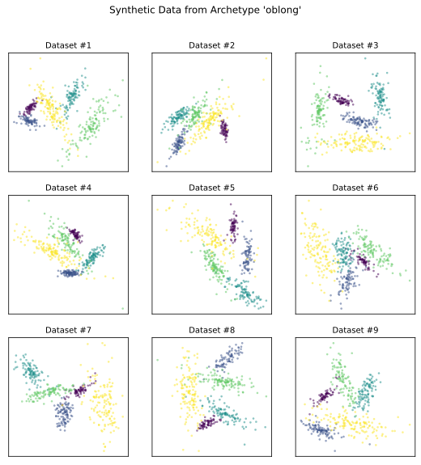

What is an Archetype?#
Using repliclust, you can generate many different synthetic data
sets that all look similar. To illustrate, we will now generate nine
different data sets based on an archetype specifying oblong clusters.
import matplotlib.pyplot as plt
from repliclust import Archetype, DataGenerator, set_seed
set_seed(1)
archetype_oblong = Archetype(n_clusters=5, dim=2, n_samples=500,
aspect_ref=3, aspect_maxmin=1.5,
name="oblong")
data_generator = DataGenerator(archetype=archetype_oblong)
fig, ax = plt.subplots(figsize=(9,9), dpi=300, nrows=3, ncols=3)
for i in range(3):
for j in range(3):
X, y, archetype = data_generator.synthesize(quiet=True)
ax[i,j].set_title('Dataset #' + str(i*3 + (j+1)), fontsize=10)
ax[i,j].scatter(X[:,0],X[:,1],c=y, s=5, alpha=0.5, linewidth=0.3)
ax[i,j].set_xticks([]); ax[i,j].set_yticks([])
plt.subplots_adjust(hspace=0.20)
fig.suptitle("Synthetic Data from Archetype '"
+ archetype.name + "'", y=0.97)

Setting the option quiet=True in the call to
synthesize()
avoids printing status updates during data generation.